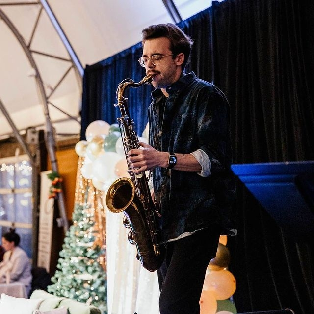

587-433-8175
linkedin.com/nick-graham

PROFESSIONAL SKILLS
- Exceptional teamwork skills - thrive in a team environment
- Managing and maintaining a clean and organized work space
- Strong leadership skills - abillity to listen and consider the needs and insights of my team members
- Presenting thoughtful, organized, and concise ideas or concepts in front of an audience of students or collegues
- Interacting with and understanding customer needs, and helping find the best ways to suit those needs
WORK EXPERIENCE
| Cowtown Beefshack | Shift Supervisor | May 2020 - June 2024 |
| Calgary Stetson Showband | Instructor | Sept. 2018 - Dec 2020 |
| Beer revolution | Line Cook | Apr. 2018 - Mar. 2020 |
| Famoso Neapolitan Pizzeria | Line Leader | Nov. 2015 - June 2018 |
EDUCATION
| SAIT - Software Development | May 2024 - Mar. 2026 |
| Bishop Carroll Highschool | Sept. 2013 - June 2016 |
HOBBIES
- Playing, creating, performing, and learning about music
- Learning new musical instruments
- Keeping active with outdoor activities such as disc golf
- Learning coding languages and developing personal projects
- Being social and spending time with friends or meeting new people
PERSONAL PROJECTS
- Creating music - writing songs for my band, or songs for myself (every song is a project in itself)
- (Not sure I'd actually use songwriting in a real resume but they're the only real personal projects I'm working on currently)
CAREER GOALS
- Pursue a career full of lifelong learning and personal growth
- Work in areas or on projects that I am passionate about
- Make a postive change in the world through my work